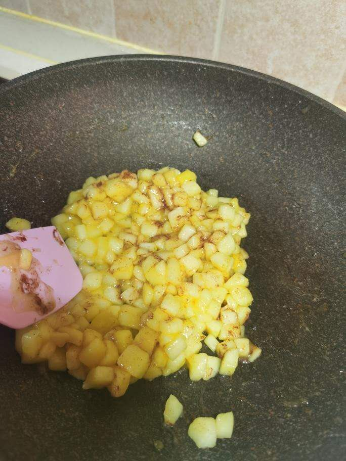
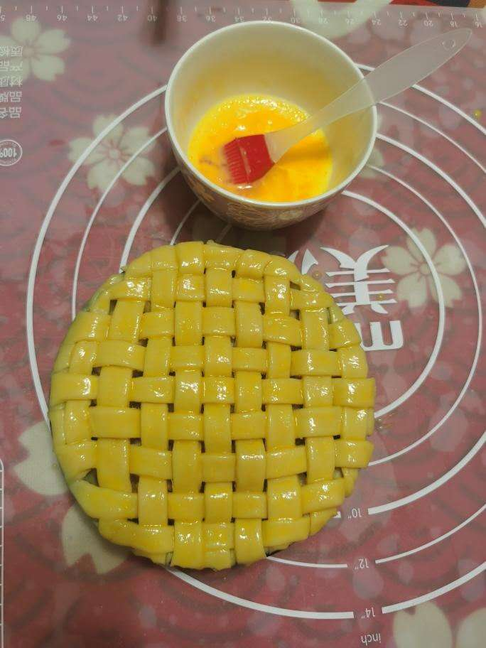
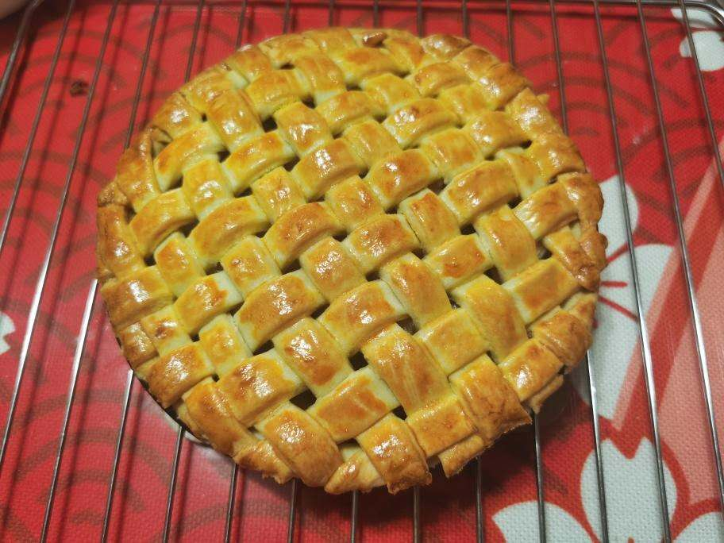

Apple Pie
Ingredients
- Plain flour
- water
- sugar
- chopped apple
- salt
- butter
- powdered cinnamon
- starch
- lime
- eggs
Steps
- Soften the butter, then add plain flour and sugar
- Use hand to rub to made the mixture granular
- Add water and stir the mixture into dough, wrap the bowl and refrigerate for 10 mins

- Add butter in the pan before fire, then add chopped apple, some lime juice, and sugar
- Add the starch when liquid start forming, then shut the fire when the liquid is mostly gone
- Add salt and powdered cinnamon, stir

- Use half of the dough to spread it on the mould, put the parched apples in, and use the remaining dough to cover
- brush the pie with egg mixture, then put it in the oven. Bake it for 30 minutes with 190°C

Source of images: https://m.xiachufang.com/recipe/106591553/
(This is the recipe that I use when cooking at home)
Relevant website: https://www.allrecipes.com/recipe/12682/apple-pie-by-grandma-ople/